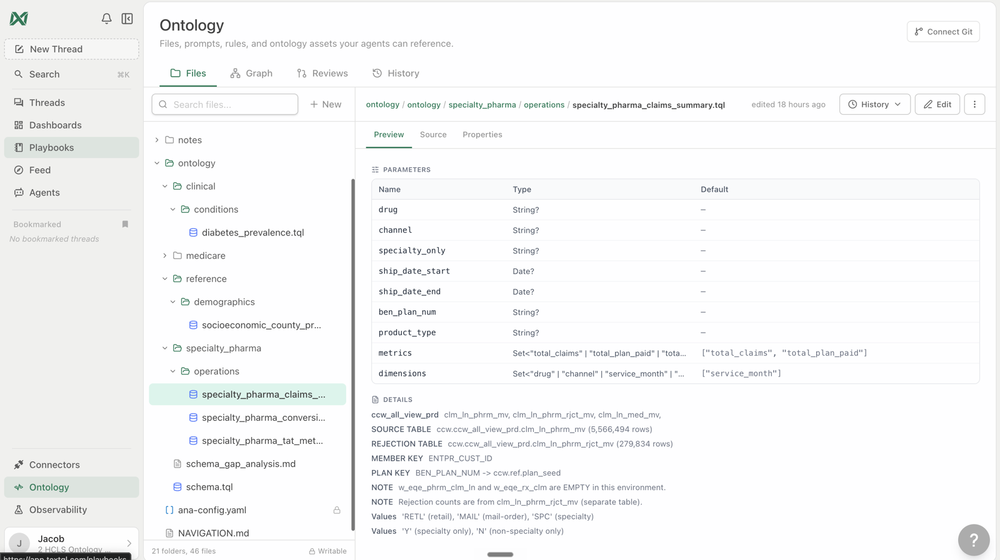

Build Your Ontology, End to End
A hands-on workshop on turning the context your organization already has — databases, documents, spreadsheets, diagrams, transcripts — into a governed, queryable ontology with Ana, and keeping it current as new information arrives.
It runs as short, hands-on modules: a goal, copy-paste prompts, what you'll see, and a checkpoint before moving on.
Two ways to build — do either, or both
From a connected database
Point Ana at a data source: discover the schema, draft the docs, define governed metrics, reconcile conflicts. Modules 2–5.
From a pile of documents
Start from the messy reality most teams have — SOPs, metric docs, diagrams, transcripts — and watch it become one coherent model. Modules 6–8.
The before/after baseline
Ask the same hard question cold and warm — the clearest proof of what the ontology buys you. Module 1.
Role-based access
One governed ontology, many teams — each with its own scope and voice. Module 9.
How to use this workshop
- Read Module 0 for the concepts — what an ontology is here, and the method.
- Run the baseline (Module 1). You'll come back to it at the end of each track.
- Pick your track: A if you have a connected database, B if you're starting from documents. Doing both is the full picture.
- Every step has a Prompt block — copy, paste into Ana, adapt anything in
[brackets].
The example prompts target the workshop's demo datasets (see the Datasets & Document Sources reference) and the example scenario in the companion repo, TextQLLabs/ontology-workshop-guide (access is granted by the TextQL team — ask your TextQL contact if you can't open it). Swap in your own data sources and documents to run it for real.
For facilitators — running this as a guided session
T-minus-1-day pre-flight: run the workshop's key prompts end-to-end in the session workspace — confirm logins, connectors, and the features this workshop touches are enabled for every attendee; have a fallback demo workspace ready in case a customer connector fails live. Pacing: when a long prompt is running (2–4 min), fire it first, then discuss the concept while Ana works — never watch a spinner in silence. If behind schedule, cut sections marked optional, never the checkpoints. Group sessions: attendees drive, you narrate; collect every miss or wrong answer in a shared doc — that list is the ontology backlog. With 10+ attendees on one warehouse, stagger the heavy prompts.
🤖 Prefer to have Ana run this workshop?
Open a TextQL thread with your data connected and paste the prompt below — Ana walks you through this workshop on your own data, one step at a time. You run each prompt; she coaches.
Hey Ana — facilitate the "Build Your Ontology" workshop with me in this thread, on the data connected here. Pull the steps from https://textqllabs.github.io/workshops/build-your-ontology/ and run it interactively: look at my data first (2–3 lines), then go ONE module at a time. For each module, give ME the prompt to copy and run as my next message, tell me what to look for, then wait and coach me on my result. Start with what you see, then Module 0.
Ana fetches the steps from the link — no copy/paste of the workshop needed. (Air-gapped / VPC tenants where Ana can't reach the web: paste the module list from this workshop's ana-runner.md instead.)
Concepts & The Method
What an ontology is here
An ontology is the mapping between your technical assets (tables, catalogs, documents) and your business (metrics, workflows, terminology). In TextQL it's just files — Markdown for human context and .tql for a typed, SQL-rendering semantic layer — kept in a git-backed repository with review, versioning, and access control. Ana reads it, renders inspectable warehouse SQL from it, and helps you extend it.
The principles
- Just files. Business definitions, SQL templates, notes, and operating rules live in one versioned file tree. Portable, diff-able, and yours.
- Locality of behavior. You should understand a metric by reading its file and the few it imports — no black-box compiler.
.tqlrenders inspectable native warehouse SQL. - Governed by default. Semantic changes are proposed → diffed → reviewed → approved → audited, like software.
- Ana does the heavy lifting. She inspects a
.tqlfile, renders SQL from parameters, and executes it — preferring a governed surface over ad-hoc SQL. - Discovery first. Build from what's actually there — start by reading the schema and the documents, not from assumptions.
Why this approach wins — field lessons
Most data leaders you'll build with have spent months on a clean semantic layer in Looker, Omni, Collibra, or Palantir — and they're rightly proud of it. The rigid-tool trap: those tools force big design decisions upfront, before anyone has seen a single real question from a real analyst. So the model captures what seemed important at modeling time and drifts from what actually turns out to matter. Our approach inverts that.
- Their prior work isn't wasted — it's a corpus. dbt models, LookML, Omni configs, Power BI datasets, wikis, spreadsheets — none needs to be reformatted or migrated. Drop it in; Ana reads it and starts from a warm place.
- You're not writing the ontology — Ana is. She makes most of the structural decisions and physically writes the content. You are the captain and reviewer, keeping her directionally correct. Ana is self-referential: she knows what context an agent needs.
- You're not building blind — you need a North Star. Establish what the ontology is for before anything goes in the repo. BI parity, analyst self-serve, and operational/embedded queries each want a different shape (governance, strictness, flexibility). An ontology without a North Star is expensive guesswork.
Do not hand a skeptic a form to fill out. Templates, question libraries, and "North Star archetypes" exist to signal expertise (you've solved this in their domain) and to force the right conversation — not as a schema to deploy. Naming domain-specific failure modes ("here's where naive implementations break") earns your opinions. Then bias hard toward action: the answer to "where do we start?" is "let me show you." Establish the North Star → feed existing context → start asking real questions → review & ratify what Ana proposes. The model improves every cycle.
The research behind it
This isn't just philosophy — it's measured. TextQL's paper "Malleability Is All You Need: A Self-Maintaining Semantic Layer for Data Agents" (Baumstark, Tomitsuka, Ma — VLDB 2026 / NOVAS) names the "amnesia tax": a stateless agent that re-explores the warehouse on every question spends 92–94% of its tokens rediscovering the same tables, joins, and filters. Cost scales with task count, not novelty; identical questions resolve to divergent SQL (non-reproducible); long contexts rot (latency and failure rates climb with depth); and naive memory is non-portable across engines.
- Invert the lifecycle: the agent reads prior knowledge → explores only the frontier → answers → commits new definitions back to a version-controlled, executable semantic layer. Discovery is amortized across tasks and agents, not re-incurred per request.
- Measured results: ≥30% fewer tokens (up to ~50% on complex multi-join queries), ~41% fewer SQL probe-turns, per-query cost falls toward a "novelty floor" as the layer accretes knowledge (most of a warehouse learned in ~35 queries), and switching backends (DuckDB→Postgres) required no change — definitions are dialect-independent.
- Trust by construction: every write-back is a git commit with an author + diff; definitions are executable, so they're validated mechanically (recompile + run) rather than re-read as prose; high-stakes paths route to human review (CODEOWNERS-style).
That's the "why" behind everything below: you're not asking the customer to build a perfect model upfront — you're standing up a living one that gets cheaper, more accurate, and more reproducible the more it's used.
The repository shape
ontology/ schema.tql central table backings (rename once, everywhere follows) relations/ per-source modules: table source + reusable expressions + metric keys dimensions/ grouping expressions, each with the join it needs filters/ reusable filter predicates queries/ public query surfaces (expose metrics / dimensions / filters) notes/ business rationale + decisions, colocated with the code
Where each input lands
| Input | Lands as |
|---|---|
| Business documentation (SOPs, policies, glossaries) | notes/*.md + term definitions |
| Metrics documentation | governed .tql query surfaces + notes |
| Database + data dictionaries | schema backings + relations + table docs |
| Process-flow diagrams | entities + relationships + workflow notes |
| Call transcripts / unstructured text | terminology, intents, entities → glossary + entities |
| Golden datasets | golden-query test fixtures (accuracy) |
| Validation sets | eval cases that verify answers |
| Governed / access-controlled documents | fail-closed access rules + governed notes |
How you know it's right
- Every query renders inspectable SQL — you can read exactly what ran.
- Golden-query tests pin a known-correct value and alert on drift.
- Flexibility ↔ accuracy is a per-metric dial: exact where it must be, flexible where exploration matters.
✅ Checkpoint
The Before/After Baseline
Before you build anything, ask Ana a hard question with no ontology attached — just a raw connection. Note the answer, how long it took, and which definition it assumed.
[A hard, definition-sensitive question from your domain — e.g. "What's our 30-day readmission rate for the last complete quarter?" or "What was net revenue retention last quarter?"] Note which definition you used and show the SQL.
Ask the same question in a fresh session with your ontology attached and compare: the warm answer routes through your governed definition, is consistent, and shows the exact, audited SQL. It's the clearest way to see what the ontology buys you.
✅ Checkpoint
Discover the Schema & Draft the Docs
2.1 · Discover the schema
Connect to the data source and pull the information schema first. List the tables and key columns, and map how the core entities relate (the join keys). Don't run heavy scans yet.
2.2 · Draft the documentation from the data
You don't need a glossary to start — Ana drafts one.
Profile a couple of the core tables (sampled — no full scans) and draft a data dictionary, a short business glossary, and a list of candidate metrics worth governing. For each metric, flag any definitional ambiguity a human should resolve.
✅ Checkpoint
Draft the Ontology & First Governed Metric
3.1 · Draft the ontology + a first metric
Using the schema and the docs we just drafted, propose the ontology: the core entities, the metrics to govern, and the dimensions. Draft the first query-surface .tql, give every metric a stable alias, and render the SQL before executing.
.tql and the exact, inspectable SQL. Run it to get the answer.3.2 · Save it to the ontology
Save the docs, the metric definitions, and the .tql surfaces into the ontology so they persist and are reusable across sessions.
✅ Checkpoint
Explore the Model & Reconcile a Conflicting Metric
4.1 · Explore what you built
Do: open the ontology graph and browse the file tree and a notes/*.md. Walk entities → metrics → lineage. This is your living model — readable files plus a graph, versioned and reviewable.

.tql inspectable — parameters, metrics, dimensions, and the exact table backings. The Graph tab is one click away.4.2 · Reconcile a conflicting metric — the key moment
Two teams define this metric differently (for example, a stricter vs. broader window, or a prorated vs. full-count denominator). Inspect the data, recommend one governed definition, author it as a .tql surface, and record the decision — and the rejected alternative — in a notes file. Keep the alternative available under a separate, clearly-named metric.
Every organization has a metric defined two ways. Governing it into one definition — with the decision recorded — is the moment the ontology stops being documentation and starts being the source of truth.
✅ Checkpoint
Update Without Rebuilding
Update the ontology: add a new variant of an existing metric and break a metric out by a new dimension. Then handle a schema change (a renamed column). Show me the diff before applying, and open the changes for review.
schema.tql once; everything downstream follows.Close the loop
Now re-ask your Module 1 baseline question in a fresh session with the ontology attached. Compare: governed definition, consistent answer, exact audited SQL.
[Your Module 1 baseline question, exactly as you asked it cold.] Note which definition you used and show the SQL.
✅ Checkpoint
Build from a Pile of Documents
This is how most organizations actually start: not from a clean database, but from a stack of mixed documents — SOPs, a metrics document, data dictionaries, process-flow diagrams, call transcripts, golden datasets, access policies.
6.1 · Gather the pile
Do: look at the input set (the companion repo's example-scenario/ is a complete illustrative set — a member-services contact center, in every input type). For your own documents, see the Datasets & Document Sources reference for upload, Drive, SharePoint, object storage, and git options.
6.2 · Build the ontology from it
Read these documents — SOPs, a metrics document, data dictionaries, process-flow diagrams, and call transcripts. Propose an ontology: the core entities, the metrics worth governing, and the dimensions. Explain where each input lands — which became an entity, a metric, a note, or an access rule — then draft the files.
✅ Checkpoint
Validate with Golden Data & Govern with Access Policies
7.1 · Validate with golden datasets
Use these golden datasets and validation cases to check the metrics. Where a metric is ambiguous, reconcile it to the governed definition and add a golden-query test that pins the expected value.
7.2 · Govern with access policies
Apply these access policies to the ontology: restrict sensitive surfaces to the right roles (fail closed), apply row-level filters by scope, and limit restricted data to authorized roles. Show the access logic in the .tql.
✅ Checkpoint
The N+1 Document — and Beyond
8.1 · Add the next document
Here's one new document. Figure out where it fits in the existing ontology, make a targeted edit to the right metric/entity/notes — not a rebuild — and open a focused change describing exactly what changed and why. Don't touch unrelated files.
8.2 · Consume & maintain
Expose these metrics as a stable surface callable from BI or via API/MCP, and describe an agent that watches for new documents or schema changes and proposes an ontology update automatically.
Then close the loop: re-ask your Module 1 baseline with the ontology attached.
[Your Module 1 baseline question, exactly as you asked it cold.] Note which definition you used and show the SQL.
✅ Checkpoint
Role-Based Access — One Ontology, Many Teams
This module is the taster — the full deep-dive (personal vs. role vs. org context, persona authoring, provisioning via SSO/SCIM, a six-persona template library) is the Context Stack workshop.
The ontology is just files. The behavioral context — what Ana knows, how she responds, what she's allowed to touch — is also just files, in a behaviors/ folder. Swap the context, swap the persona. The governed .tql underneath doesn't change.
behaviors/
program_manager/
org_context.md ← restricted scope, plain-language behavior
analyst/
org_context.md ← broad scope, assumption-transparent behavior
Each org_context.md defines: allowed data surfaces, clarification behavior, response style, and hard limits (what Ana must decline, and how).
9.1 · Same question, two personas
Open the ontology with each behavioral context attached and ask the same broad question:
[A broad question in your domain — e.g. "How are our patients doing on hospital utilization and cost?"]
9.2 · The strong moment — an off-scope request
[As the restricted persona, ask for something outside that role's scope — a domain they aren't provisioned for.]
Common questions
| Question | Answer |
|---|---|
| How does this relate to our existing RBAC? | It's the semantic layer of RBAC — above the database, below the UI. Database permissions control which rows exist; behavioral context controls which questions get asked and how answers are framed. |
| Who manages the personas? | The same team that manages the ontology — each is a Markdown file in git: branch, review, approve. |
| How many can we have? | As many as you need — one per team, use case, or compliance boundary. |
| What stops someone switching personas? | Context is provisioned at the org/session level by an admin — tied to your identity provider's groups via SSO/SCIM. |
✅ Checkpoint
Datasets & Document Sources
Example datasets used in this workshop
| Dataset | What it is | Used for |
|---|---|---|
| Clinical + claims (Tuva model) | A synthetic, patient-level Medicare claims + clinical dataset (the open Tuva data model): patients, encounters, conditions, procedures, claims, eligibility, member-months. | Track A — rich entities for metrics like readmission rate and cost PMPM. |
| Medicare Part D + demographics | Public CMS Part D landscape data — plans, formulary, costs, prescribers — plus county-level socioeconomic reference data. | Cross-source analysis and the role-based-access examples. |
Numbers and dates are illustrative. For your own build, connect your data sources and run the same steps. Set connectors at the start of a session; credentials are managed in connector settings — never stored in the ontology repo.
Bringing your documents to Ana
| Method | How it works | Best for |
|---|---|---|
| Upload to a session | Add files directly (PDF, DOCX, PPTX, XLSX, CSV, Markdown). | A handful of documents, or adding "one more". |
| Cloud document store | Connect a shared drive and point Ana at a folder. | Teams whose documents live in a managed drive. |
| Enterprise document systems | SharePoint / OneDrive, Confluence, or internal object storage (S3 / Azure Blob / GCS). | Larger or regulated organizations. |
| Git repository | Keep the distilled ontology (Markdown + .tql) in your own git repo. | The governed ontology itself. |
Keep documents and data inside your own boundary. With a single-tenant / in-VPC deployment, sensitive content never leaves your environment, and Ana ingests from your sanctioned stores rather than a consumer drive. A common pattern is a watched location — a designated folder or bucket Ana monitors, so a newly dropped document is distilled into the ontology as a reviewable change.
The flow: raw documents are inputs; the ontology is the governed output they become. You don't upload raw binaries into the ontology repo — you feed them to Ana, and she distills them into the governed Markdown/.tql that lives there.
Wrap-Up 🎉
You built a governed ontology — from a database, from documents, or both — and proved the loop:
- Discovery first: Ana read the schema and the documents, then drafted the model
- Governed metrics: conflicting definitions reconciled into one source of truth, with decisions recorded
- Accuracy checked: golden-query tests pin known-correct values
- Cheap to evolve: the N+1 document and the schema rename were targeted edits, not rebuilds
- Many teams, one model: role-based personas with auditable scope
Where to go from here
- Run it on your own data this week. Repeat Track A on one real source, or Track B on one real document pile. Keep the baseline habit.
- Operating it in production — git workflows, access control at scale, accuracy testing, the improvement loop — is the companion Ontology Operations workshop.
- In healthcare? The Healthcare Starter Pack workshop starts you from a pre-built ontology — entity spine, terminology, governed metrics — instead of a blank page.
- For your business users: once the ontology is live, the Self-Service Analytics workshop teaches them to use what you built.